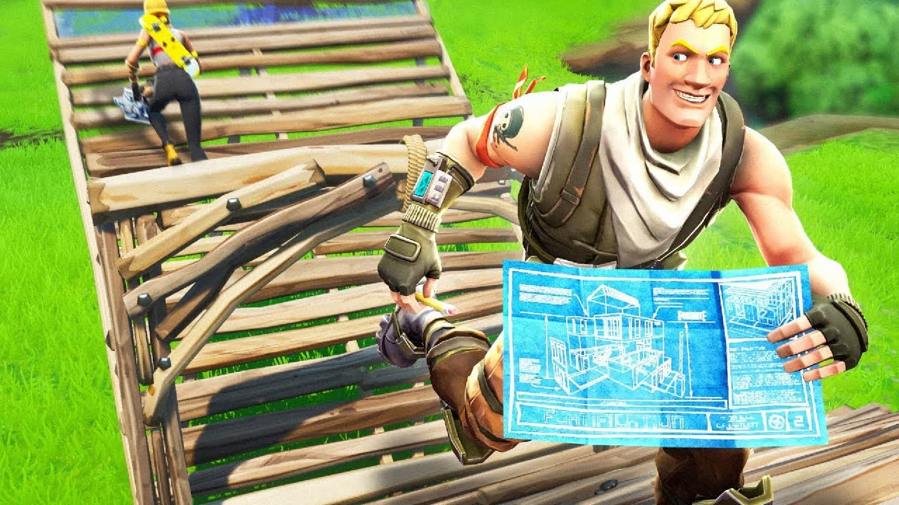

Construção
A construção é uma das características que diferenciam o modo tradicional de Fortnite de outros jogos Battle Royale.

Principais construções
- Parede
- Rampa
- Piso
- Cone
Para que servem?
As construções podem ser utilizadas para proteção, movimentação, defesa e combate.